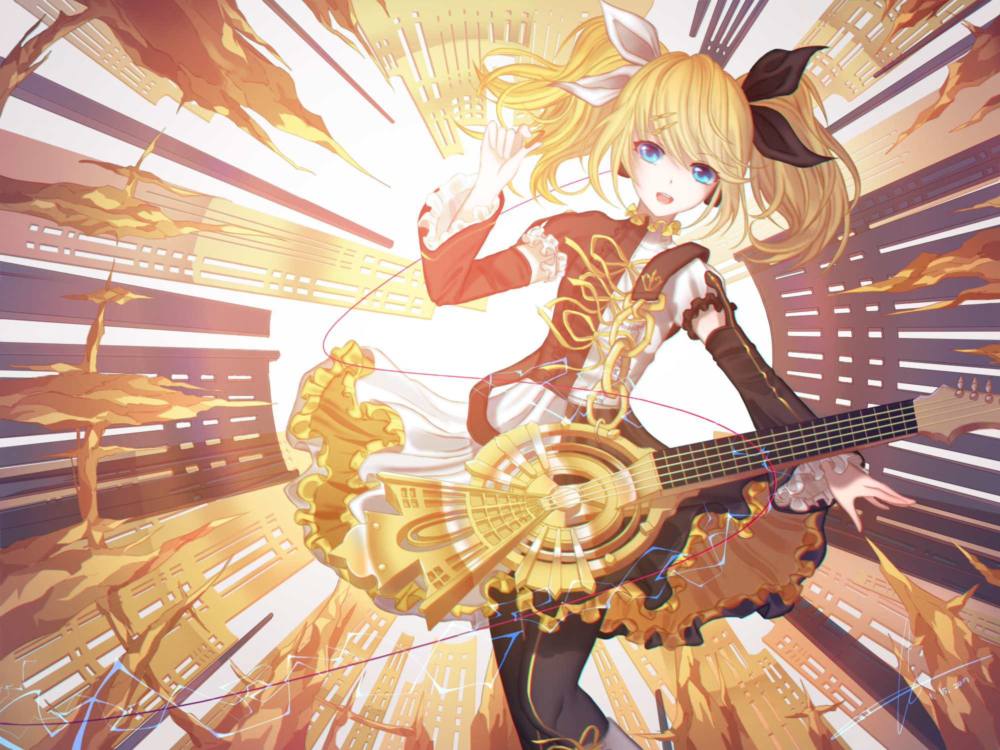
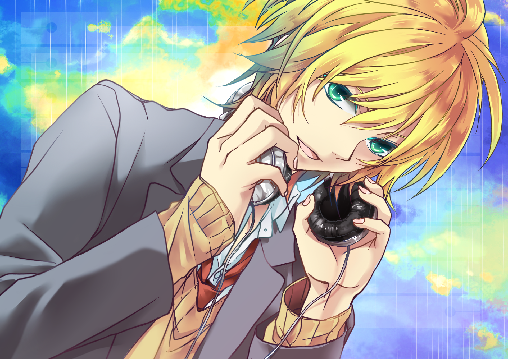
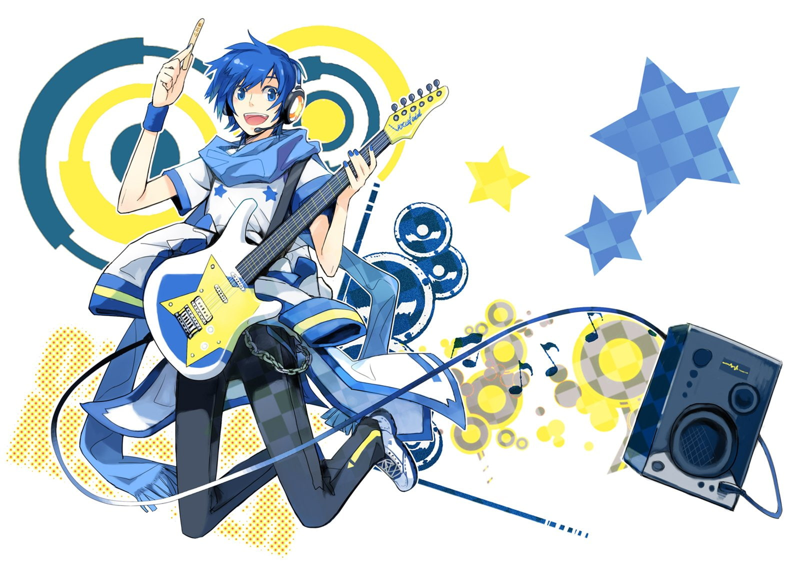

Discografía
- livetune feat. Hatsune Miku* - Re:package
- Supercell — Miku Hatsune Supercell (3), ryo (44) Feat. Hatsune Miku* - Supercell
- みくのかんづめ — Miku Hatsune Oster Project Feat. 初音ミク* - みくのかんづめ (CD, Album)
- DJ Aura Qualic* Feat. Miku Hatsune - Unlimited Skies CD, Album)
- Next (Ver.i) — Miku Hatsune Sososo* Feat. Hatsune Miku* - Next (Ver.i) (13xFile, MP3, Album)
- Livetune Feat. Hatsune Miku* - Re:MIKUS
- Mosaic.Wav X Kamo Tsuruta Feat. Miku Hatsune - Heartsnative
- Doriko Feat. 初音ミク* - Unformed
- おかのうえ feat. 初音ミク* - With Miku
- 王族Band Feat. 初音ミク* - Rainbow Snow ~オーロラにえがいたLove Letter~ (CD, Album + DVD-V, NTSC)
Integrantes

Megurine Luka-compañera de voz de Miku

Kagamine Rin-compañera de voz de Miku.

Kagamine Len-compañero de voz de Miku.

Kaito -compañero de voz de Miku.
Meiko -compañero de voz de Miku.